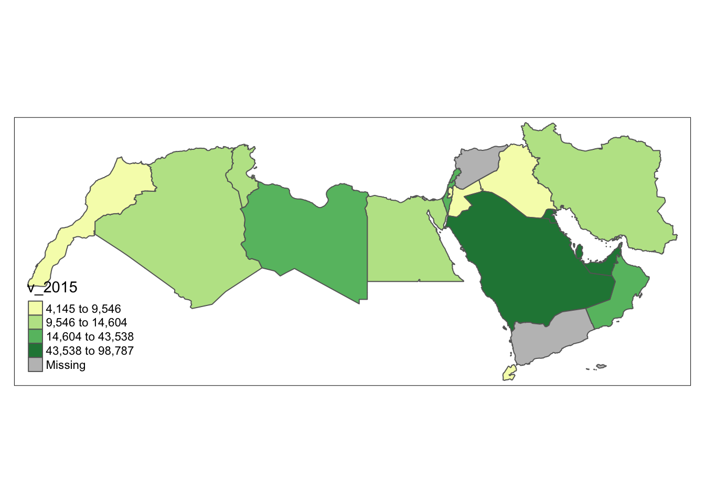

# Load the 'sf' library, which stands for Simple Features, used for working with spatial data.
library(sf)
# Load the 'tidyverse' library, a collection of packages for data manipulation and visualization.
library(tidyverse)
# Load the 'tmap' library, which is used for creating thematic maps and visualizing spatial data.
library(tmap)
# The 'readr' library provides a fast and user-friendly way to read data from common formats like CSV.
library(readr)
# Converts Between GeoJSON and simple feature objects
library(geojsonsf)
# RColorBrewer library for creating visually appealing color schemes for plots and data visualizations
library(RColorBrewer)
# Corking with class intervals and classification methods, esp in the context of spatial data analysis.
library(classInt)Lab in R
Choropleths
In this session, we will build on all we have learnt so far about loading and manipulating (spatial) data and apply it to one of the most commonly used forms of spatial analysis: choropleths. Remember these are maps that display the spatial distribution of a variable encoded in a color scheme, also called palette. Although there are many ways in which you can convert the values of a variable into a specific color, we will focus in this context only on a handful of them, in particular:
Unique values
Equal interval
Quantiles
Fisher-Jenks
Installing Packages
Before all this mapping fun, let us get the importing of libraries and data loading out of the way:
Data
We will be using World Bank data for this section, looking at World Development Indicators and Education Statistics. We will be focusing on the Middle East and North Africa (MENA). We start by loading the relevant geometries:
mena_sf <- geojson_sf("data/MENA/MENA.geojson") # we load the geojson using `geojson_sf`
plot(mena_sf$geometry) # we plot the geometry to make sure it looks like it shouldDon’t forget that before you go further, you want to check the CRS of the sf object as well as the dataframe.
Answer
st_crs(mena_sf)Coordinate Reference System:
User input: 4326
wkt:
GEOGCS["WGS 84",
DATUM["WGS_1984",
SPHEROID["WGS 84",6378137,298.257223563,
AUTHORITY["EPSG","7030"]],
AUTHORITY["EPSG","6326"]],
PRIMEM["Greenwich",0,
AUTHORITY["EPSG","8901"]],
UNIT["degree",0.0174532925199433,
AUTHORITY["EPSG","9122"]],
AXIS["Latitude",NORTH],
AXIS["Longitude",EAST],
AUTHORITY["EPSG","4326"]]head(mena_sf)Simple feature collection with 6 features and 4 fields
Geometry type: GEOMETRY
Dimension: XY
Bounding box: xmin: 34.24835 ymin: 22.62095 xmax: 63.31963 ymax: 39.77153
Geodetic CRS: WGS 84
name formal_en_name code_a2 code_a3
1 United Arab Emirates United Arab Emirates AE ARE
2 Bahrain Kingdom of Bahrain BH BHR
3 Iran Islamic Republic of Iran IR IRN
4 Iraq Republic of Iraq IQ IRQ
5 Israel State of Israel IL ISR
6 Jordan Hashemite Kingdom of Jordan JO JOR
geometry
1 MULTIPOLYGON (((53.86305 24...
2 POLYGON ((50.55161 26.19424...
3 MULTIPOLYGON (((55.05437 25...
4 POLYGON ((42.89674 37.32491...
5 POLYGON ((35.80363 33.24846...
6 POLYGON ((39.04633 32.30849...We then load the csv with some World Development Indicators data.
world_dev <- read.csv("data/MENA/mena_worlddevelop.csv") And join the two objects using the relevant codes.
world_dev_sf <- left_join(mena_sf,
world_dev,
by=c("code_a3"="Country.Code"))Now we are fully ready to map!
We will be using two packages throughout the module. Both tmap (see here), and ggplot2 (, see here). There is also mapsf (for thematic cartography, see here) as another alternative.
Unique values
A choropleth for categorical variables simply assigns a different color to every potential value in the series. Variables could be both nominal or ordinal.
Nominal: Nominal variables represent categories or labels without any inherent order or ranking. The categories are distinct and do not have a natural progression or hierarchy, such as “apple,” “banana,” and “orange” for fruit types.
Ordinal : Ordinal variables represent categories or labels with a meaningful order or ranking. The relative order or hierarchy among the categories is significant, indicating a clear progression from lower to higher values, such as “low,” “medium,” and “high” for satisfaction levels.
In R, creating categorical choropleths is possible with one line of code. To demonstrate this, we can plot the the income level of countries in the MENA region (coded in our table as the income_group variable). The code below uses ggplot and tmap to plot.
tmap provides another option using the function tm_fill and tm_shape. A line has been added to to start editing the placement of the legend as well with tm_layout.
tm_shape(world_dev_sf) + # data
tm_fill("income_group", title = "Income Groups")+ # variable and giving a title
tm_borders() + # add borders
tm_layout(legend.outside = TRUE, legend.outside.position = "bottom") # placing the legendThis is similar in ggplot. geom_sf is calling the geometric object and fill is defining what values we want to fill the polygons with.
ggplot(data = world_dev_sf) +
geom_sf(aes(fill = income_group)) +
theme_void()
Important
These maps are all a bit rough a need quite a bit more work. They are just a starting point.
Equal Interval
If, instead of categorical variables, we want to display the geographical distribution of a continuous phenomenon, we need to select a way to encode each value into a color. One potential solution is applying what is usually called “equal intervals”. The intuition of this method is to split the range of the distribution, the difference between the minimum and maximum value, into equally large segments and to assign a different color to each of them according to a palette that reflects the fact that values are ordered.
Creating the choropleth is relatively straightforward in R. For example, to create an equal interval of GDP per capita in 2015 (v_2015).
First we need to prepare the data, going back to our data wrangling.
world_dev_filtered <- world_dev_sf %>%
# Step 1: Filter rows where Series.Name is "GDP per capita, PPP (current international $)"
filter(Series.Name == "GDP per capita, PPP (current international $)") %>%
# Step 2: Further filter out rows where 'v_2015' is not missing (i.e., remove NA values)
filter(!is.na(v_2015)) %>%
# Step 3: Mutate (modify) the 'v_2015' variable by rounding it to a whole number
mutate(v_2015 = round(as.numeric(v_2015)))
Advanced - Looping through different columns
You can also loop through different columns, is for example you wanted to convert GDP per capita for all the years to numeric.
# All the columns to convert
columns_to_convert <- c("v_2010", "v_2015", "v_2020")
# Loop through the columns and convert to numeric
for (col in columns_to_convert) {
world_dev_sf[[col]] <- as.numeric(world_dev_sf[[col]])
}Now let’s map using equal intervals.
With a few easy functions tmap allows you to plot your data with different styles. Here we are using equal for equal intervals. Have a look at the code annotation for more detail.
tm_basemap() +
# Create a basic map using the tm_basemap() function.
tm_shape(world_dev_filtered) +
# Define the data source and shape to be used for the map using tm_shape().
tm_polygons("v_2015", palette = "YlGn", id = "name", n = 7, style= "equal") +
# Add polygons to the map using the tm_polygons() function.
# 'v_2015bis' is our variable within the 'world_dev_filtered' dataset.
# The palette "YlGn" specifies the color palette for the polygons.
# 'id' is set to "name," which means the 'name' column will be used to identify polygons.
# 'n' is set to 7, which means the data will be divided into 7 classes.
# 'style' is set to "equal," which indicates equal interval classification for the data.
tm_layout(
legend.outside = TRUE, legend.outside.position = "bottom",
title = "GDP per capita by Equal Interval Classification")
# Customize the map layout using tm_layout().Of course, this could do with some further work. You might want to check out tm_layout
Mapping in ggplot can be a bit tricky at the beginning. You will want to take a look at the package classInt here.
Step 1: Using the dplyr pipe operator %>%, we’re modifying the world_dev_filtered data frame. We’re using the mutate function to create a new column ‘v_2015bis’ in ‘world_dev_filtered’.
Step 2: The ‘v_2015’ column in ‘world_dev_filtered’ is being divided by 1000 so we can talk about thousands of $ in GDP per capita, and the result is being rounded to the nearest integer.
world_dev_filtered <- world_dev_filtered %>%
mutate(v_2015bis = round(v_2015 / 1000))Step 3: Calculate equal interval breaks with function classIntervals and store them.
e_breaks <- classIntervals(world_dev_filtered$v_2015bis, n = 7, style = "equal")
# Assign the class breaks to the data
world_dev_filtered$e_breaks <- cut(world_dev_filtered$v_2015bis, e_breaks$brks)e_breaks: This is a variable name that you are assigning to store the result of the class intervals calculation.classIntervals(): This is a function that calculates class intervals for a given numeric vector. It is likely provided by a package like ‘classInt’ or ‘classIntervals’ in R.world_dev_filtered$v_2015: This is the data vector that you want to create class intervals for. It appears to be a column named ‘v_2015’ within the ‘world_dev_filtered’ dataset.n = 7: This argument specifies that you want to divide the data into 7 classes.style = "equal": This argument specifies that you want to use equal interval classification, which means that the data range will be divided into equal-sized intervals. These class intervals can be useful for creating data visualizations like choropleth maps or histograms.
Step 4: Finally we can map! as you see a bit of extra work was needed, but you ultimately have more control.
num_bins <-7
cmap <- brewer.pal(num_bins, "YlGn")
ggplot() +
geom_sf(data = world_dev_filtered, aes(fill = e_breaks)) +
scale_fill_manual(
values = cmap,
name = "GDP per capita (in 1000s)", # Improved legend title
labels = gsub("[,]", "-", paste0("$", gsub("[\\[\\]()]", " ", levels(world_dev_filtered$e_breaks), perl = TRUE))) # Replace comma with hyphen, add dollar sign, and remove brackets/parentheses from labels
) +
labs(
title = "GDP per capita by Equal Interval Classification",
fill = NULL # Remove the fill label
) +
theme_void() +
theme(legend.position = "bottom")It is important to understand that equal intervals can first and foremost be visualised on the data distribution. We have already created these intervals with the function classIntervals in Step 3 of the ggplot tab above. Here we need a couple of extra steps to collect the break values and plot them in histogram form.
Class Interval styles
The function classIntervals has the following styles: “fixed”, “sd”, “equal”, “pretty”, “quantile”, “kmeans”, “hclust”, “bclust”, “fisher”, “jenks”, “dpih”, “headtails”, “maximum”, or “box”.
# Same step as above
e_breaks <- classIntervals(world_dev_filtered$v_2015, n = 7, style = "equal")
world_dev_filtered$e_breaks <- cut(world_dev_filtered$v_2015, e_breaks$brks)
# Collect the values of the breaks
e_break_values <- e_breaks$brks
# Place the values in a dataframe
e_break_values_df <- data.frame(BreakValues = e_break_values)
# Create a ggplot2 visualization with 'world_dev_filtered' dataset as the data source
# and 'v_2015' as the variable for the x-axis.
ggplot(world_dev_filtered, aes(x = v_2015)) +
# Add a density plot to the visualization with fill color set to dark blue
# and transparency (alpha) set to 0.4.
geom_density(fill = "darkblue", alpha = 0.4) +
# Add a rug plot (small tick marks) along the x-axis with transparency (alpha) set to 0.5.
geom_rug(alpha = 0.5) +
# Add vertical lines to the plot based on the 'e_break_values_df' dataset
# with x-intercepts specified by the 'BreakValues' variable.
# The color of these lines is set to green.
geom_vline(data = e_break_values_df, aes(xintercept = BreakValues), color = "green") +
# Apply the 'theme_minimal()' theme to the plot for a minimalistic appearance.
theme_minimal() +
# Modify the x-axis label to display "GDP per capita in 2015".
labs(x = "GDP per capita in 2015")Technically speaking, the figure is created by overlaying a KDE plot with vertical bars for each of the break points. This makes much more explicit the issue highlighted by which the first two bin contain a large amount of observations while the one with top values only encompasses a handful of them.
Quantiles
One solution to obtain a more balanced classification scheme is using quantiles. This, by definition, assigns the same amount of values to each bin: the entire series is laid out in order and break points are assigned in a way that leaves exactly the same amount of observations between each of them. This “observation-based” approach contrasts with the “value-based” method of equal intervals and, although it can obscure the magnitude of extreme values, it can be more informative in cases with skewed distributions.
The code required to create the choropleth mirrors that needed above for equal intervals:
As in our previous example, the coding is a bit simpler if we use tmap.
tm_basemap() +
tm_shape(world_dev_filtered) +
tm_polygons("v_2015", palette = "YlGn", id = "WARD_NAME", n = 4, style= "quantile") 
As before, first we create the intervals, in this case quantiles.
# Find quantile breaks for data segmentation into four groups.
qt_breaks <- classIntervals(world_dev_filtered$v_2015bis, n = 4, style = "quantile")
# Assign the class breaks to the data
world_dev_filtered$qt_breaks <- cut(world_dev_filtered$v_2015bis, qt_breaks$brks)Then we map the data:
num_bins <-4
# Define a color palette for visualizing data.
cmap <- brewer.pal(num_bins, "YlGn")
# plot
ggplot() +
geom_sf(data = world_dev_filtered, aes(fill = qt_breaks)) +
theme_void() + # remove x and y axis
scale_fill_manual(
values = cmap,
name = "GDP per capita (in 1000s)", # Improved legend title
labels = gsub("[,]", "-", paste0("$", gsub("[\\[\\]()]", " ", levels(world_dev_filtered$qt_breaks), perl = TRUE)))) + # Replace comma with hyphen, add dollar sign, and remove brackets/parentheses from labels
labs(
title = "GDP per capita (Quantiles)",
fill = NULL # Remove the fill label
) +
theme_void() +
theme(legend.position = "bottom")As we are dealing with a limited number of countries it is easier to see how the data is being divided differently in the histogram.
qt_breaks <- classIntervals(world_dev_filtered$v_2015, n = 4, style = "quantile")
world_dev_filtered$qt_breaks <- cut(world_dev_filtered$v_2015, qt_breaks$brks)
# Collect the values of the breaks
qt_break_values <- qt_breaks$brks
# Place the values in a dataframe
qt_break_values_df <- data.frame(BreakValues = qt_break_values)
# Create a ggplot2 visualization
ggplot(world_dev_filtered, aes(x = v_2015)) +
# Density plot
geom_density(fill = "darkblue", alpha = 0.4) +
# Add a rug plot (small tick marks)
geom_rug(alpha = 0.5) +
# Add vertical lines at 'BreakValues'
geom_vline(data = qt_break_values_df, aes(xintercept = BreakValues), color = "green") +
theme_minimal() +
labs(x = "GDP per capita in 2015")Fisher-Jenks
Equal interval and quantiles are only two examples of very many classification schemes to encode values into colors. As an example of a more sophisticated one, let us create a Fisher-Jenks choropleth:
As in our previous example, the coding is a bit simpler if we use tmap.
tm_basemap() +
tm_shape(world_dev_filtered) +
tm_polygons("v_2015", palette = "YlGn", id = "WARD_NAME", n = 7, style= "fisher") As before, first we create the intervals, in this case fisher jenks
# Find fisher breaks for data segmentation into 5 groups.
fish_breaks <- classIntervals(world_dev_filtered$v_2015bis, n = 7, style = "fisher")
# Assign the class breaks to the data
world_dev_filtered$fish_breaks <- cut(world_dev_filtered$v_2015bis, fish_breaks$brks)Then we map the data:
num_bins <-7
# Define a color palette for visualizing data.
cmap <- brewer.pal(num_bins, "YlGn")
# plot
ggplot() +
geom_sf(data = world_dev_filtered, aes(fill = fish_breaks)) +
theme_void() + # remove x and y axis
scale_fill_manual(
values = cmap,
name = "GDP per capita (in 1000s)", # Improved legend title
labels = gsub("[,]", "-", paste0("$", gsub("[\\[\\]()]", " ", levels(world_dev_filtered$fish_breaks), perl = TRUE)))) + # Replace comma with hyphen, add dollar sign, and remove brackets/parentheses from labels
labs(
title = "GDP per capita (Quantiles)",
fill = NULL # Remove the fill label
) +
theme_void() +
theme(legend.position = "bottom")Now let’s look at the density plot
fish_breaks <- classIntervals(world_dev_filtered$v_2015, n = 7, style = "fisher")
world_dev_filtered$fish_breaks <- cut(world_dev_filtered$v_2015, fish_breaks$brks)
# Collect the values of the breaks
fish_break_values <- fish_breaks$brks
# Place the values in a dataframe
fish_break_values_df <- data.frame(BreakValues = fish_break_values)
# Create a ggplot2 visualization
ggplot(world_dev_filtered, aes(x = v_2015)) +
# Density plot
geom_density(fill = "darkblue", alpha = 0.4) +
# Add a rug plot (small tick marks)
geom_rug(alpha = 0.5) +
# Add vertical lines at 'BreakValues'
geom_vline(data = fish_break_values_df, aes(xintercept = BreakValues), color = "green") +
theme_minimal() +
labs(x = "GDP per capita in 2015")You will notice a lot cooler difference once you play around with a larger dataset.
Zooming into the map
A general map of an entire region, or urban area, can sometimes obscure local patterns because they happen at a much smaller scale that cannot be perceived in the global view. One way to solve this is by providing a focus of a smaller part of the map in a separate figure. Although there are many ways to do this in R, the most straightforward one is to define the bounding box.
As an example, let us consider the first ggplot map of this Lab:
Zoom into full map
We use the function coord_sf to zoom at the desired level.It’s important to know what CRS your data is in if you want to create zoomed versions of your maps. BBox finder is a useful tool to identify coordinates in EPSG:4326.
ggplot(data = world_dev_sf) +
geom_sf(aes(fill = income_group)) +
scale_fill_brewer(palette = "Set4") + # Use ColorBrewer palette
theme_void() +
coord_sf(xlim = c(30.763478, 40.332570), ylim = c(30.520606, 36.285000)) +
labs(fill = "Income Group") # Add a legend titleWarning: Unknown palette: "Set4"Additional resources
On Drawing beautiful maps with
sfandggplotsee hereIf you want to have a look at Choropleths in Python have a look at the chapter on choropleth mapping by Rey, Arribas-Bel and Wolf